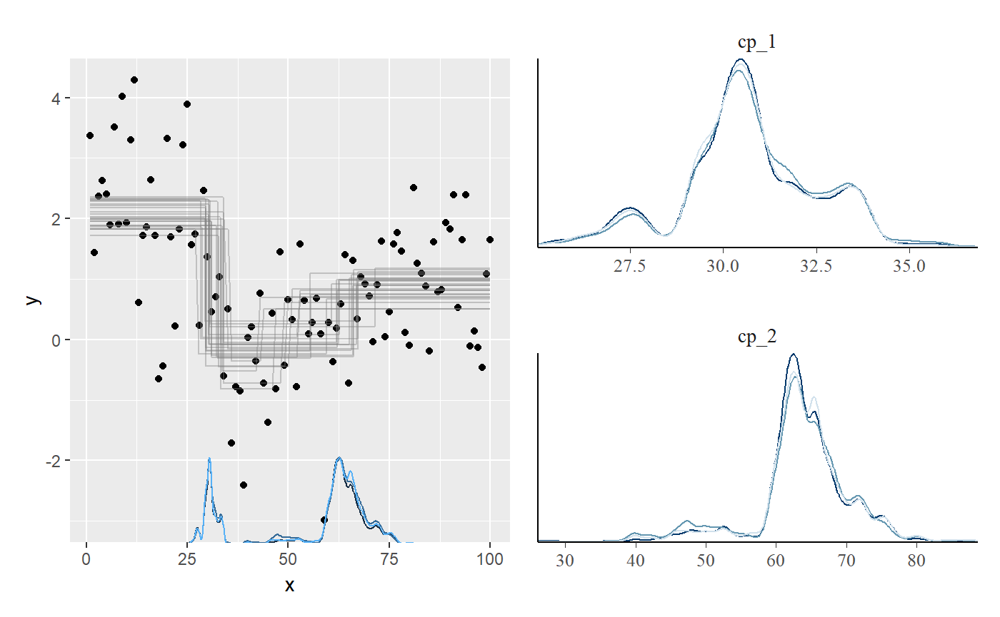
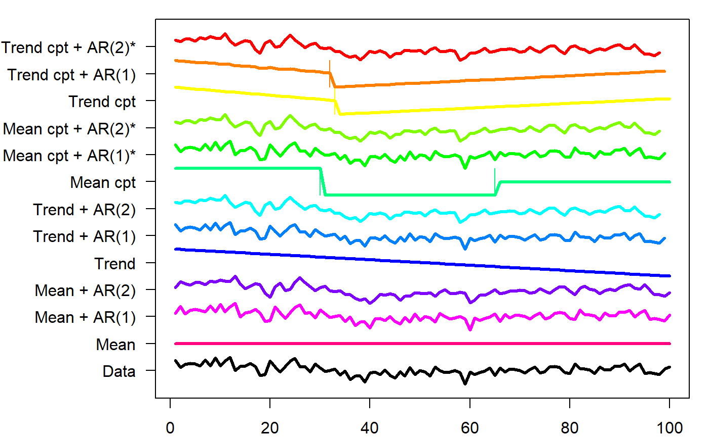

mcp and other change point packages
Jonas Kristoffer Lindeløv
2019-11-12
packages.RmdThere are a lot of change point packages out there already, so why mcp? Here are my (probably biased) thoughts about this. I compiled a table about change point packages. I will demonstrate each of these packages below.

Unique features of mcp
- Manually specify the segment structure.
- Posterior distributions on change points. This matters since they rarely conform to known distributions.
- varying change points: To my knowledge, no other package implements this. See more about varying change points in mcp.
- Fixing parameters to values and other parameters as discussed under priors
-
Explicit priors:
bcpis the only other Bayesian change point package I know of. It contains a few high-level prior parameters, but not for specific parameters such as where change points are expected to occur etc. See priors for more. - Prior and posterior predictive checks. In general, most other packages have limited or no model checking functionality.
- Flexible hypothesis testing using
looandhypothesis, including testing the existence of a change point. Most other packages stop at estimation, though some provide p-values.
Where mcp is inferior
mcp is inferior with respect to: * speed: mcmc sampling is slow compared to analytical and specialized solutions. For datasets > 20.000 points, this may be impermissibly long. * automatic detection of change points: most packages out there does automatic change point detection. This is not a space that mcp tries to fill so use the other packages here. Though given the intercept-only example below, I would worry about their ability to recover change points. * no support for autoregressive models: As change point models are big in time-series analyses, I’d much like to implement at least AR(1). This is on planned, but not implemented yet. * not multivariate and no variance change point: These are planned but not implemented.
Comparison of packages
As a simple example, we simulate some intercept-only data with change points at 30 (from mean=2 to mean=0) and 70 (to mean=1) and a residual of 1 SD.
# Simulate
set.seed(42) # I always use 42; no fiddling
data = data.frame(
x = 1:100,
y = c(rnorm(30, 2), rnorm(40, 0), rnorm(30, 1))
)
# Plot it
plot(data)
abline(v = c(30, 70), col="red")
mcp
mcp needs no further introduction. We fit the three-plateaus model with default priors:.
library(mcp)
segments = list(y~1, 1~1, 1~1) # three intercept-only segments
fit_mcp = mcp(segments, data, par_x = "x")## Compiling model graph
## Resolving undeclared variables
## Allocating nodes
## Graph information:
## Observed stochastic nodes: 100
## Unobserved stochastic nodes: 6
## Total graph size: 1224
##
## Initializing model
##
## user system elapsed
## 9.17 0.13 9.31## Family: gaussian(link = 'identity')
## Iterations: 9000 from 3 chains.
## Segments:
## 1: y ~ 1
## 2: y ~ 1 ~ 1
## 3: y ~ 1 ~ 1
##
## Population-level parameters:
## name mean lower upper rhat eff ts_se
## cp_1 30.6744 27.131 33.987 1.00 1455 18.5610
## cp_2 64.3362 47.132 76.269 1.01 954 400.3807
## int_1 2.0438 1.652 2.452 1.00 4412 0.0888
## int_2 -0.0637 -0.512 0.362 1.00 1947 0.2434
## int_3 0.9192 0.518 1.295 1.00 2634 0.1403
## sigma 1.0628 0.911 1.213 1.00 4567 0.0112The summary shows good parameter recovery, though the second change point is detected a bit early. This is understandable if you look at the data, and the true change point is still within the highest density interval.
Plotting the posterior distributions of the change points reveal that they are not well represented by a Gaussian or other known distributions. Therefore, confidence intervals are likely to be meaningless for this problem.
gridExtra::grid.arrange(plot(fit_mcp),
plot(fit_mcp, "dens_overlay", pars = c("cp_1", "cp_2")),
ncol = 2)
segmented
segmented has a very shallow learning curve combined with great modeling flexibility. You simply specify your model in lm, glm, Arima, and also work for e.g. coxph (Cox proportional Hazard). Supply it to segmented which then segment your data along the x-axis and applie the linear model in each segment. The trick is identifying the locations where this split works the best. The positive consequence is that you get great modeling flexibility with GLM, AR(1) models, etc.
The downside is that you kan only have one kind of segments and (for some reason) you can not model intercepts on anything but the first segment. Only (joined) slopes are supported in segment 2+. Unfortunately, this means that segmented fails for the present changing-intercept data. segmented is otherwise well developed with prediction functions, (frequentist) intervals, plots, etc. so if you have large datasets with impermissible long run times in mcp and it matches what segmented can model, it is a good option.
Enough talk:
library(segmented)
fit_lm = glm(y ~ 1 + x, data, family = gaussian()) # intercept-only model
fit_segmented = segmented(fit_lm, seg.Z = ~x, npsi = 2) # Two change points along x## Warning: max number of iterations (33) attained## Warning: max number of iterations (35) attained## Warning: max number of iterations (1) attained##
## ***Regression Model with Segmented Relationship(s)***
##
## Call:
## segmented.glm(obj = fit_lm, seg.Z = ~x, npsi = 2)
##
## Estimated Break-Point(s):
## Est. St.Err
## psi1.x 40.475 3.675
## psi2.x 91.000 4.942
##
## Meaningful coefficients of the linear terms:
## Estimate Std. Error t value Pr(>|t|)
## (Intercept) 3.27753 0.33873 9.676 8.98e-16 ***
## x -0.08849 0.01440 -6.146 1.91e-08 ***
## U1.x 0.12136 0.01770 6.855 NA
## U2.x -0.13915 0.11618 -1.198 NA
## ---
## Signif. codes: 0 '***' 0.001 '**' 0.01 '*' 0.05 '.' 0.1 ' ' 1
## (Dispersion parameter for gaussian family taken to be 1.104904)
##
## Null deviance: 177.66 on 99 degrees of freedom
## Residual deviance: 103.86 on 94 degrees of freedom
## AIC: 301.58
##
## Convergence attained in 9 iter. (rel. change 2.9106e-06)As expected, the change points are off (psi1.x and psi2.x). The default plot is sparse, but you can quickly add more info:

changepoint
changepoint is focused on intercept-only changes. It can estimate changes in means (cpt.mean), variance (cpt.var), or both (cpt.meanvar). It is semi-automatic in that you can set the numer of change points using parameter Q and this defaults to five. It can recover ML estimates of the intercepts. It does not estiamte uncertainty, nor model checking. It only takes a response variable, so the change point is the data index, not the point on an x-axis. Make sure that your data is ordered. In our case it is ordered and we have 1 data point at each x, so it is optimal for changepoint.
It detects the first change point, but not the second.
## Loading required package: zoo##
## Attaching package: 'zoo'## The following objects are masked from 'package:base':
##
## as.Date, as.Date.numeric## Successfully loaded changepoint package version 2.2.2
## NOTE: Predefined penalty values changed in version 2.2. Previous penalty values with a postfix 1 i.e. SIC1 are now without i.e. SIC and previous penalties without a postfix i.e. SIC are now with a postfix 0 i.e. SIC0. See NEWS and help files for further details.fit_changepoint = cpt.mean(data$y)
# Return estimates
list(
ints = param.est(fit_changepoint)$mean,
cp = cpts(fit_changepoint)
)## $ints
## [1] 2.0685868 0.4456268
##
## $cp
## [1] 30Plot:

bcp
bcp is the only other Bayesian package in the game. It automatically detects change points and segment types, though you can use the parameter d to increase the prior probability of intercept-only models. It provides estimates of means and probability of change point at each x-coordinate. It has little additional functionality. The summary method conveys the same as the plot, so let’s stick to the plot.
We see that it captures the change point at 30, omits the one at 70, and has some false alarms elsewhere.
## Loading required package: grid
ecp
ecp contains six functions to detect change points. It is clearly built for multivariate cases, but is I have not managed to get e.agglo working for the present example, but here I run the other five. The resulting information is quite limited with no intervals, no plots, etc. It detects the first change point, but not the one at 70.
data_ecp = as.matrix(data$y)
fit_ecp1 = ecp::e.cp3o(data_ecp, K = 2) # maximum 2 change points
fit_ecp2 = ecp::e.cp3o_delta(data_ecp, K = 2) # maximum 2 change points
fit_ecp3 = ecp::e.divisive(data_ecp, k = 2) # 2 change points. Ignored???
fit_ecp4 = ecp::ks.cp3o(data_ecp, K = 2) # maximum 2 change points
fit_ecp5 = ecp::ks.cp3o_delta(data_ecp, K = 2) # maximum 2 change points
# Show the change point estimates
str(list(
e.cp3o = fit_ecp1$estimates,
e.cp3o_delta = fit_ecp2$estimates,
e.divisive = fit_ecp3$estimates,
ks.cp30 = fit_ecp4$estimates,
ks.cp3o_delta = fit_ecp5$estimates
))## List of 5
## $ e.cp3o : int 31
## $ e.cp3o_delta : int 60
## $ e.divisive : num [1:4] 1 31 63 101
## $ ks.cp30 : int 31
## $ ks.cp3o_delta: int 31
strucchange
Contains the function Fstats which can detect a single change point. The functionality is limited and way superseeded by changepoint. I won’t go into further details. It finds the change point at 30:
## [1] 30
TSMCP
Short for “Time-Series Multiple Change Point”. It too is very limited, outputting a single number (!). For the problem at hand, changing method makes no difference but for many other c, it fails to find anything. There is also TSMCP::cpvnts() to model AR(N), but I have faild to make it find any change points in the present data set.
It finds the change point at 30, but not at 70:
## [1] 30
robts::changerob
robts is about robust regression in time-series. It is not on CRAN, so it has to be installed using install.packages("robts", repos="http://R-Forge.R-project.org"). I fail to install the dependencies, and development of the package seems to have stopped around 2014. It won’t be covered further here.